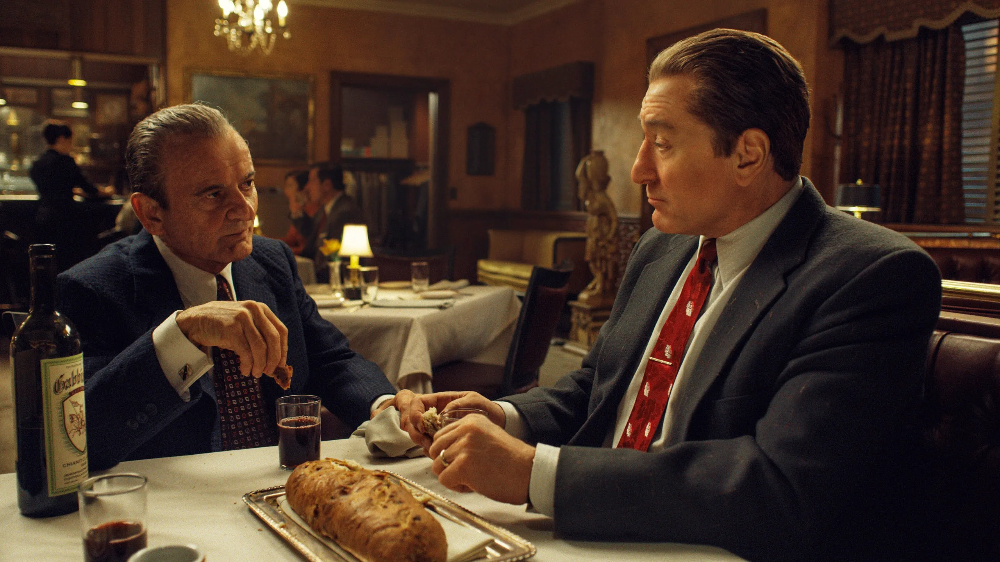
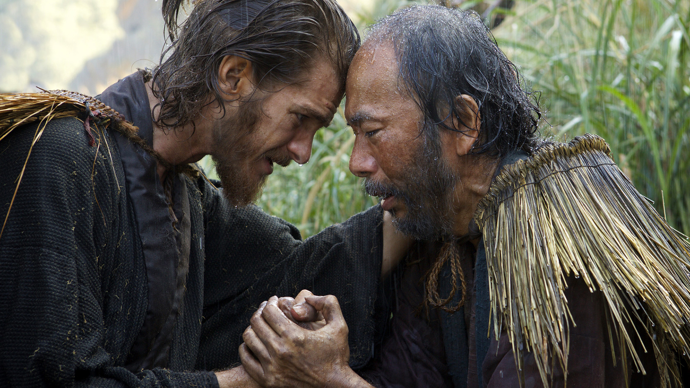

LATEST FILMS

The Irishman (2019)
In the 1950s, truck driver Frank Sheeran gets involved with Russell Bufalino and his Pennsylvania crime family. As Sheeran climbs the ranks to become a top hit man, he also goes to work for Jimmy Hoffa -- a powerful Teamster tied to organized crime.
LEARN MORE

Silence (2016)
Rodrigues and Garupe, two Catholic missionaries, travel to Japan in search of their missing mentor, Ferreira, who is believed to have been promoting Catholicism by going against the law.
LEARN MORE

The Wolf of Wall Street (2013)
Introduced to life in the fast lane through stockbroking, Jordan Belfort takes a hit after a Wall Street crash. He teams up with Donnie Azoff, cheating his way to the top as his relationships slide.